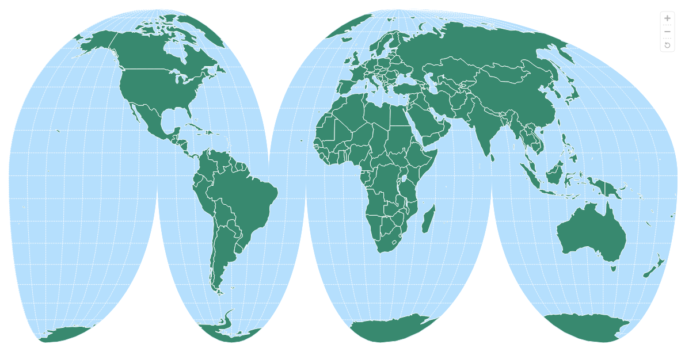
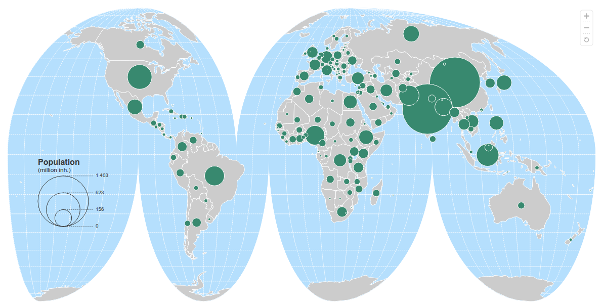
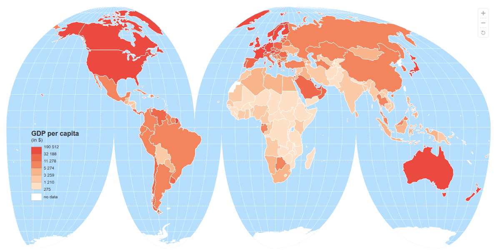

Interactive Cartography (htmlwidget)
geovizr is an R package for thematic mapping. It’s an R wrapper around the geoviz JavaScript library, itself based on the d3.js ecosystem. Like the original JavaScript library, the package can be used to create a wide range of interactive, zoomable vector maps, taking advantage of d3’s many features: proportional symbols, pictograms, typologies, choropleth maps, spikes, tiles, Dorling cartograms, etc. It can also be used to create pretty static vectorial maps in SVG format, suitable for editorial cartography.
Installation
You can install the released version of geovizr from CRAN with:
install.packages("geovizr")Alternatively, you can install the development version of geovizr from r-universe with:
install.packages("geovizr", repos = c("https://riatelab.r-universe.dev", "https://cloud.r-project.org"))Usage
Creating a map with geovizr requires chaining several functions. The create() function initializes a map with general parameters. Then, functions such as outline(), graticule(), path(), and many others allow you to add and refine layers. Finally, the render() function displays the map. Here are a few examples.
First, let’s load some data
library(sf)
world <- st_read(
system.file("gpkg/world.gpkg", package = "geovizr"),
quiet = TRUE
)- A simple map
viz_create(projection = "InterruptedMollweide", zoomable = TRUE) |>
viz_outline() |>
viz_graticule(stroke = "white") |>
viz_path(data = world, fill = "#38896F", tip = "$NAMEen") |>
viz_render()
- Proportional symbol
viz_create(projection = "InterruptedMollweide", zoomable = TRUE) |>
viz_outline() |>
viz_graticule(stroke = "white") |>
viz_path(data = world, fill = "#CCC") |>
viz_prop(data = world, var = "pop", fill = "#38896F",
leg_pos = c(60, 300),
leg_values_factor = 1/1000000,
leg_values_round = 0,
leg_title = "Population",
leg_subtitle = "(million inh.)"
) |>
viz_render()
- Choropleth
viz_create(projection = "InterruptedMollweide", zoomable = TRUE) |>
viz_outline() |>
viz_graticule(stroke = "white") |>
viz_path(data = world, fill = "#CCC") |>
viz_choro(data = world, var = "gdppc",
colors = "Peach",
leg_title = "GDP per capita",
leg_subtitle = "(in $)",
leg_values_round = 0,
leg_pos = c(60, 300)
) |>
viz_render()
Alternatives
geovizr is not intended to compete with other mapping packages in R, such as mapsf or tmap. It really focuses on the html / interactive geovisualisation.
Community Guidelines
One can contribute to the package through pull requests and report issues or ask questions here.